28.3 Project: Gaussian Elimination
Mathematicians not only search for solutions of equations in one variable; they also study whole systems of linear equations:
Sample Problem In a bartering world, the values of coal (x), oil (y), and gas (z) are determined by these exchange equations:
A solution to such a system of equations consists of a collection of numbers, one per variable, such that if we replace the variable with its corresponding number, the two sides of each equation evaluate to the same number. In our running example, the solution is
We can easily check this claim:
The three equations reduce to
Figure 167 introduces a data representation for our problem domain. It includes an example of a system of equations and its solution. This representation captures the essence of a system of equations, namely, the numeric coefficients of the variables on the left-hand side and the right-hand-side values. The names of the variables don’t play any role because they are like parameters of functions; meaning, as long as they are consistently renamed the equations have the same solutions.
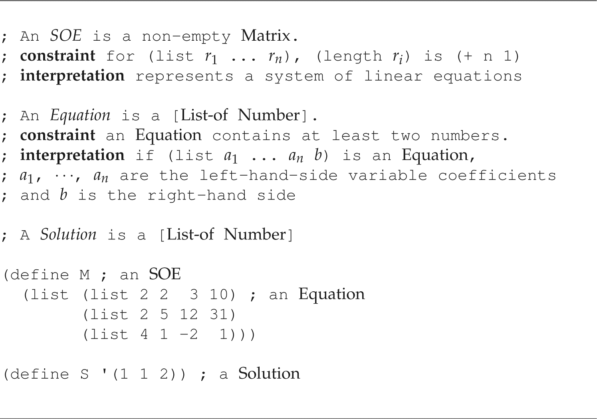
Figure 167: A data representation for systems of equations
For the rest of this section, it is convenient to use these functions:
; Equation -> [List-of Number]
; extracts the left-hand side from a row in a matrix
(check-expect (lhs (first M)) '(2 2 3))
(define (lhs e)
(reverse (rest (reverse e))))
; Equation -> Number
; extracts the right-hand side from a row in a matrix
(check-expect (rhs (first M)) 10)
(define (rhs e)
(first (reverse e)))
Exercise 462. Design the function check-solution. It consumes an SOE and a Solution. Its result is #true if plugging in the numbers from the Solution for the variables in the Equations of the SOE produces equal left-hand-side values and right-hand-side values; otherwise the function produces #false. Use check-solution to formulate tests with check-satisfied.
Hint Design the function plug-in first. It consumes the left-hand side of an Equation and a Solution and calculates out the value of the left-hand side when the numbers from the solution are plugged in for the variables. 
Gaussian elimination is a standard method for finding solutions to systems of linear equations. It consists of two steps. The first step is to transform the system of equations into a system of different shape but with the same solution. The second step is to find solutions to one equation at a time. Here we focus on the first step because it is another interesting instance of generative recursion.
The first step of the Gaussian elimination algorithm is called “triangulation” because the result is a system of equations in the shape of a triangle. In contrast, the original system is a rectangle. To understand this terminology, take a look at this list, which represents the original system:
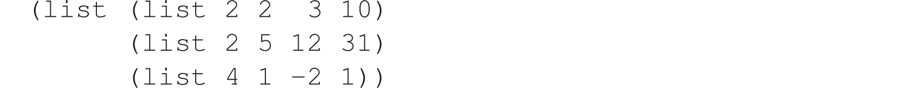
Triangulation transforms this matrix into the following:
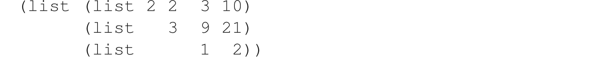
As promised, the shape of this system of equations is (roughly) a triangle.
Exercise 463. Check that the following system of equations
has the same solution as the one labeled with (†). Do so by hand and with check-solution from exercise 462.
The key idea of triangulation is to subtract the first Equation from the remaining ones. To subtract one Equation from another means to subtract the corresponding coefficients in the two Equations. With our running example, subtracting the first equation from the second yields the following matrix:
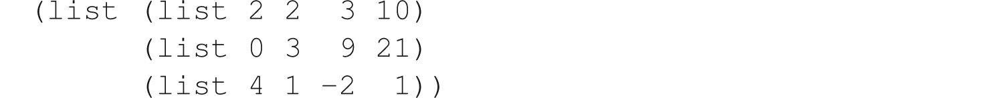
The goal of these subtractions is to put a 0 into the first column of all but the first equation. For the third equation, getting a 0 into the first position means subtracting the first equation twice from the third one:
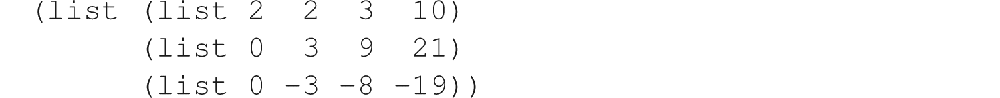
Following convention, we drop the leading 0’s from the last two equations:
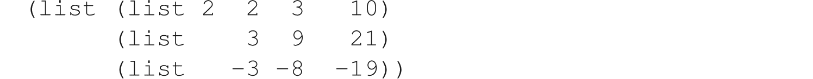
That is, we first multiply each item in the first row with 2 and then subtract the result from the last row. As mentioned, these subtractions do not change the solution; that is, the solution of the original system is also the solution of the transformed one.
Mathematics teaches how to prove such facts. We use them.
Exercise 464. Check that the following system of equations
has the same solution as the one labeled with (†). Again do so by hand and with check-solution from exercise 462.
Exercise 465. Design subtract. The function consumes two Equations of equal length. It “subtracts” a multiple of the second equation from the first, item by item, so that the resulting Equation has a 0 in the first position. Since the leading coefficient is known to be 0, subtract returns the rest of the list that results from the subtractions.
Now consider the rest of the SOE:
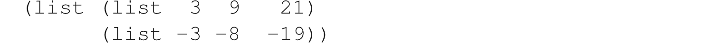
It is also an SOE, so we can apply the same algorithm again. For our running example, this next subtraction step calls for subtracting the first Equation -1 times from the second one. Doing so yields
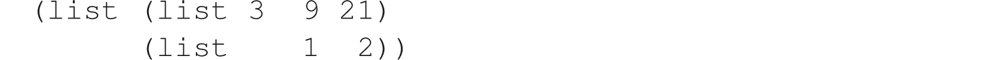
The rest of this SOE is a single equation and cannot be simplified.
Exercise 466. Here is a representation for triangular SOEs:
; A TM is an [NEList-of Equation]
; such that the Equations are of decreasing length:
; n + 1, n, n − 1, …, 2.
; interpretation represents a triangular matrix
Design the triangulate algorithm:
; SOE -> TM
; triangulates the given system of equations
(define (triangulate M)
'(1 2))
Turn the above example into a test and spell out explicit answers for the four questions based on our loose description.
Do not yet deal with the termination step of the design recipe.
Unfortunately, the solution to exercise 466 occasionally fails to produce the desired triangular system. Consider the following representation of a system of equations:
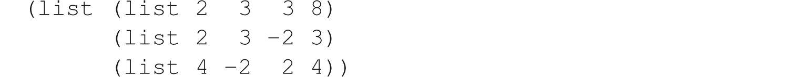
Its solution is x = 1, y = 1, and z = 1.
The first step is to subtract the first row from the second and to subtract it twice from the last one, which yields the following matrix:
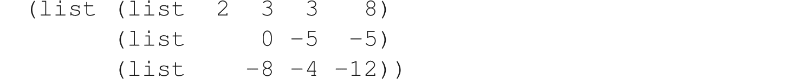
Next, triangulation would focus on the rest of the matrix:
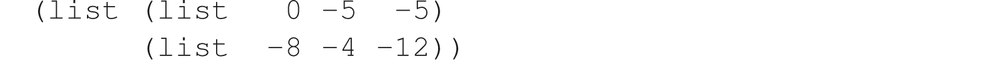
but the first item of this matrix is 0. Since it is impossible to divide by 0, the algorithm signals an error via subtract.
To overcome this problem, we need to use another piece of knowledge from our problem domain. Mathematics tells us that switching equations in a system of equations does not affect the solution. Of course, as we switch equations, we must eventually find an equation whose leading coefficient is not 0. Here we can simply swap the first two:
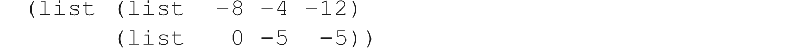
From here we may continue as before, subtracting the first equation from the remaining one 0 times. The final triangular matrix is:
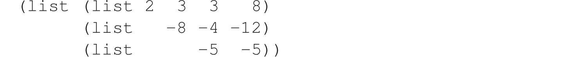
Stop! Show that x = 1, y = 1, and z = 1 is still a solution for these equations.
Exercise 467. Revise the algorithm triangulate from exercise 466 so that it rotates the equations first to find one with a leading coefficient that is not 0 before it subtracts the first equation from the remaining ones.
Does this algorithm terminate for all possible system of equations?
Hint The following expression rotates a non-empty list L:
(append (rest L) (list (first L)))
Explain why.
Some SOEs don’t have a solution. Consider this one:
If you try to triangulate this SOE—by hand or with your solution from exercise 467—you arrive at an intermediate matrix all of whose equations start with 0:
Exercise 468. Modify triangulate from exercise 467 so that it signals an error if it encounters an SOE whose leading coefficients are all 0.
After we obtain a triangular system of equations such as (*) in exercise 463, we can solve the equations, one at a time. In our specific example, the last equation says that z is 2. Equipped with this knowledge, we can eliminate z from the second equation through a substitution:
Doing so, in turn, determines the value for y:
Now that we have z = 2 and y = 1, we can plug these values into the first equation:
This yields another equation in a single variable, which we solve like this:
This finally yields a value for x and thus the complete solution for the entire SOE.
Exercise 469. Design the solve function. It consumes triangular SOEs and produces a solution.
Hint Use structural recursion for the design. Start with the design of a function that solves a single linear equation in n+1 variables, given a solution for the last n variables. In general, this function plugs in the values for the rest of the left-hand side, subtracts the result from the right-hand side, and divides by the first coefficient. Experiment with this suggestion and the above examples.
Challenge Use an existing abstraction and lambda to design solve.
Exercise 470. Define gauss, which combines the triangulate function from exercise 468 and the solve function from exercise 469.